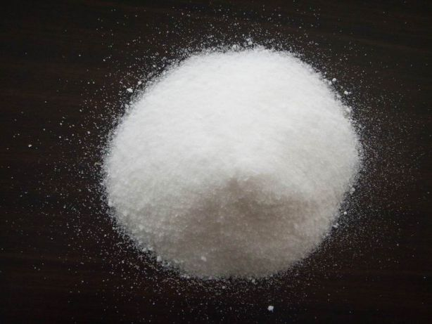

Sobre a obra e a escolha do grupo
Sinopse: a história acompanha os irmãos Edward e Alphonse Elric, alquimistas que perderam partes do corpo ao tentar ressuscitar a mãe através de uma transmutação humana proibida. Em busca da Pedra Filosofal, capaz de devolver o que perderam, eles enfrentam governos corruptos e segredos sobre a verdadeira natureza da alquimia.
Escolhemos o salitre porque ele aparece logo no início da obra, já com esse nome: é quando Edward recita a composição química de um corpo humano adulto antes de tentar a transmutação proibida, citando "100 g de salitre" no meio da lista. A maioria dos outros itens dessa cena são elementos isolados (carbono, ferro, fósforo...), mas o salitre já aparece como um composto pronto — por isso foi possível encaixá-lo diretamente numa das quatro classes pedidas no trabalho, no caso, sal. Outro ponto que pesou na escolha foi que o salitre está historicamente ligado à pólvora e a reações instáveis, o que combina com o clima da cena: uma transmutação que também sai do controle e custa caro para os irmãos Elric.
- Obra
- Fullmetal Alchemist: Brotherhood
- Autor(es)
- Hiromu Arakawa (mangá original); adaptação em anime pelo estúdio Bones, dirigida por Yasuhiro Irie
- Ano
- 2009 (estreia do anime)
- Substância
- Salitre (nitrato de potássio) — KNO₃
Identificação da substância
- Nome
- Salitre, também chamado de nitrato de potássio ou salitre-do- -reino; na forma mineral é conhecido como nitro (niter)
- Fórmula química
- KNO₃

Fonte: Jardim Animal. Disponível em: https://jardimanimal.com.br/loja/nitrato-de-potassio/.
Classificação química
O salitre pode ser formado pela reação de neutralização entre um ácido e uma base: HNO₃ + KOH → KNO₃ + H₂O. Antigamente, porém, ele era obtido de outro jeito, bem mais trabalhoso: por nitrificação bacteriana de matéria orgânica rica em nitrogênio, como esterco e outros dejetos. Esse processo gerava nitrato de cálcio, que depois era convertido em nitrato de potássio usando cinzas vegetais (ricas em carbonato de potássio).
O KNO₃ é classificado como sal porque resulta da combinação de um cátion derivado de uma base (K⁺) com um ânion derivado de um ácido (NO₃⁻). Mais especificamente, é um sal neutro, oxigenado e ternário, formado por três elementos: potássio, nitrogênio e oxigênio. Vale destacar um detalhe: o potássio metálico (K) e o ácido nítrico (HNO₃) isolados não correspondem ao sal em si — o KNO₃ só se forma na reação entre o ácido e a base.
Onde aparece na obra
- Episódio 2, "O Tabu", de Fullmetal Alchemist: Brotherhood (2009).
- Antes de tentar reviver a mãe, Edward Elric recita a "receita" de um corpo humano adulto: 35 litros de água, 20 kg de carbono, 4 litros de amônia, 1,5 kg de cal, 800 g de fósforo, 250 g de sal, 100 g de salitre, 80 g de enxofre, 7,5 g de flúor, 5 g de ferro, 3 g de silício e outros quinze elementos em pequenas quantidades.
- Os irmãos reúnem esses elementos junto com uma amostra de sangue e realizam a transmutação, que falha e tem um preço alto: Edward perde a perna e Alphonse perde o corpo inteiro.
Vale destacar que, diferente de outros elementos da lista, essa cena já cita o "salitre" pelo nome popular do próprio composto. Por isso, a análise deste trabalho parte diretamente desse item citado em tela, identificando-o quimicamente como nitrato de potássio, KNO₃.
A ciência por trás da cena
Na história, o salitre é apenas mais um item de uma lista longa de substâncias que os irmãos reúnem para tentar reconstruir um ser humano. Mas essa cena é importante: é ela que mostra que a vida não se resume à soma de substâncias químicas, e é o fracasso da transmutação que dá início a toda a trama. Fora dessa cena, o salitre não volta a aparecer explicitamente na obra — mas seu histórico com a pólvora e reações explosivas acaba reforçando, por contraste, a ideia de instabilidade e consequências fora de controle que marcam o restante da história.
A representação é parcialmente correta. É verdade que o nitrogênio e o potássio do salitre existem no corpo humano, mas não combinados como KNO₃: o potássio circula principalmente como íon K⁺ dissolvido nos fluidos das células, sendo fundamental para a atividade elétrica de neurônios e músculos, incluindo o coração. Já o nitrogênio do organismo está majoritariamente ligado em proteínas e ácidos nucleicos, não na forma de nitrato. Ou seja, o corpo não contém salitre propriamente dito. Assim como com os outros elementos citados na cena, a ideia de que seria possível juntar salitre, água, carbono e os demais ingredientes e formar um ser humano vivo não tem respaldo científico: a organização em células, tecidos e órgãos, além dos processos biológicos que sustentam a vida, não se reproduz apenas reunindo os elementos químicos correspondentes.
Como é obtido
Antigamente, o salitre era obtido de depósitos formados em paredes de cavernas e celeiros, e também produzido em "plantações de salitre": pilhas de esterco e matéria orgânica eram deixadas para apodrecer, e a amônia liberada era oxidada por bactérias em nitrato, que depois reagia com cinzas ricas em potássio. Hoje isso é feito de forma industrial, combinando fontes de potássio (como o cloreto de potássio) com ácido nítrico ou outros compostos nitrogenados, em reações controladas de neutralização e precipitação.
Usos industriais e cotidianos
O uso mais conhecido do salitre ao longo da história é como componente oxidante da pólvora negra, junto com enxofre e carvão. Hoje seu uso principal é como fertilizante agrícola, já que fornece nitrogênio e potássio ao mesmo tempo, dois nutrientes essenciais para as plantas. Também é empregado como conservante de alimentos (carnes curadas, como presunto e salame), em fogos de artifício, em propelentes de foguetes amadores e, em pequenas quantidades, em cremes dentais para dentes sensíveis.
Riscos à saúde e ao ambiente
Por ser um forte agente oxidante, o salitre representa risco de incêndio e explosão quando armazenado perto de materiais inflamáveis ou redutores. O uso excessivo de fertilizantes à base de nitrato pode contaminar rios e lençóis freáticos, contribuindo para a eutrofização da água. Já o consumo exagerado de alimentos curados com nitrato/nitrito é associado, em estudos epidemiológicos, à formação de compostos nitrosos potencialmente cancerígenos — por isso a recomendação é consumir esse tipo de alimento com moderação.
Quiz
Fontes utilizadas
- ATKINS, Peter. Princípios de Química. 5. ed. Porto Alegre: Bookman, 2012.
- Fullmetal Alchemist: Brotherhood. Direção: Yasuhiro Irie. Estúdio Bones, 2009–2010. Baseado no mangá de Hiromu Arakawa.
- Britannica. Potassium nitrate. Disponível em: https://www.britannica.com/science/potassium-nitrate.
- Wikipedia. Saltpeter. Disponível em: https://en.wikipedia.org/wiki/Saltpeter.
- Universo Animangá. A Ciência de Fullmetal Alchemist: Ingredientes do corpo humano. Disponível em: https://universoanimanga.blogspot.com/2019/01/ingredientes-do-corpo-humano.html.